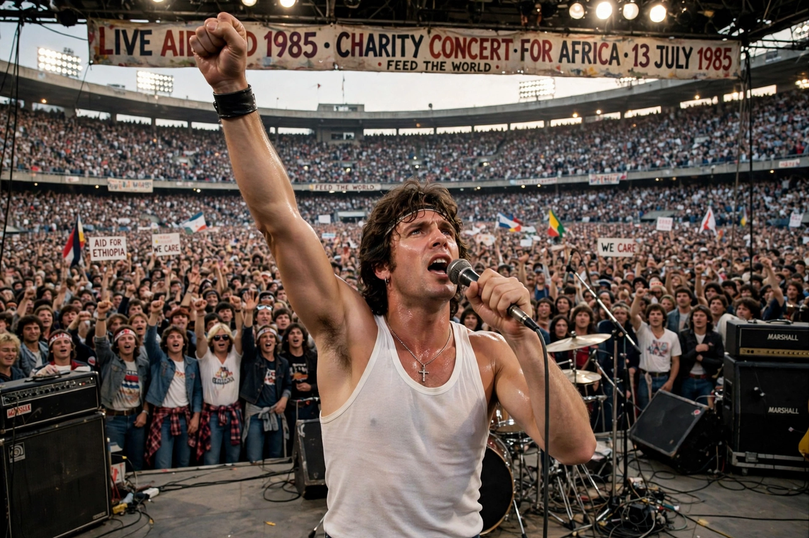

Queen (band)

Freddie Mercury at Live Aid, Wembley 1985: white tank top, arm raised, commanding the crowd in the legendary 20-minute setQueen are a British rock band formed in London in 1970 by Freddie Mercury (lead vocals, piano), Brian May (guitar), Roger Taylor (drums) and John Deacon (bass). Their earliest works were influenced by progressive rock, hard rock and heavy metal, but the band gradually ventured into more conventional and radio-friendly works by incorporating further styles, such as arena rock and pop rock.
Their 1975 single 'Bohemian Rhapsody' — a six-minute suite with an operatic section, from the album A Night at the Opera — became one of the best-selling singles of all time. Hits such as 'We Will Rock You', 'We Are the Champions', 'Another One Bites the Dust' and 'Under Pressure' (with David Bowie) made them stadium giants; their 1985 Live Aid performance is routinely voted the greatest live show ever. Mercury died of AIDS-related illness in 1991; the band later toured with Paul Rodgers and Adam Lambert.